Batik Nusantara,
Tanpa Batas Inspirasi
BatikiN adalah platform berbasis kecerdasan buatan yang menghubungkan warisan budaya batik dengan inovasi desain digital untuk mendukung pengrajin dan industri kreatif Nusantara.
Identifikasi Motif
berbasis CNN
Perpaduan Motif
untuk Desain Baru
Informasi Budaya
dan Makna Motif
Dukungan untuk
Pengrajin & UMKM
Galeri Motif Batik Nusantara
Jelajahi berbagai motif batik lengkap dengan informasi budaya dan gunakan sebagai referensi untuk eksplorasi desain.
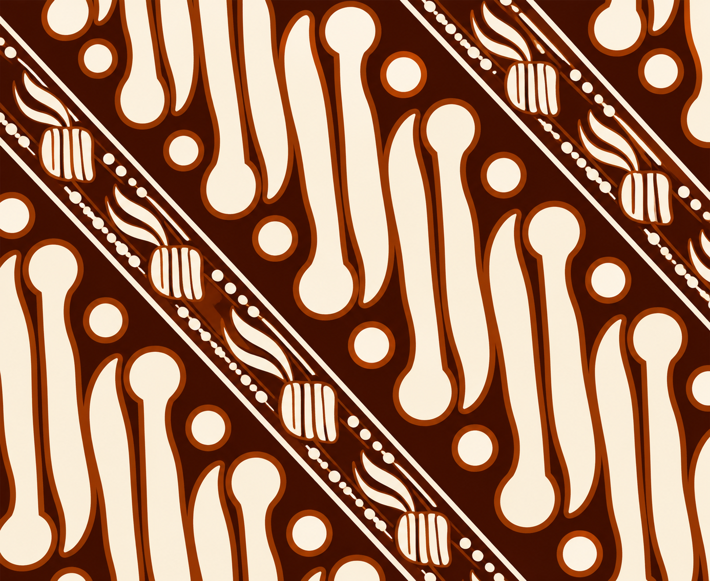
Parang
Jawa Tengah
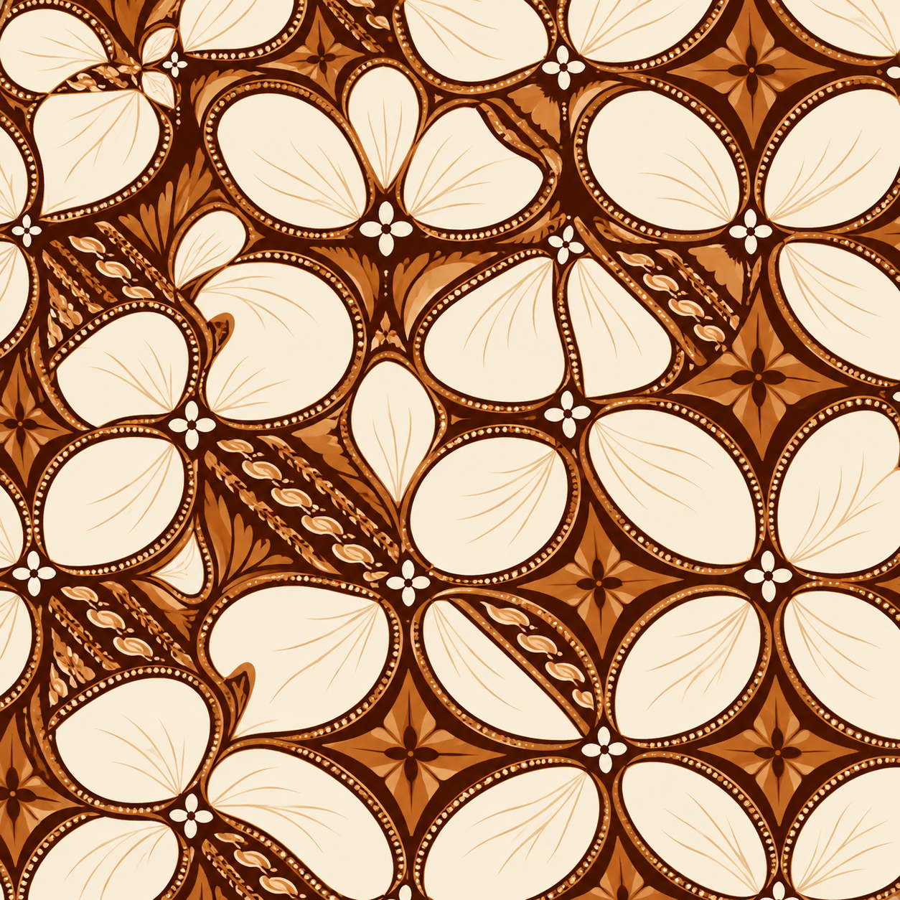
Kawung
Yogyakarta
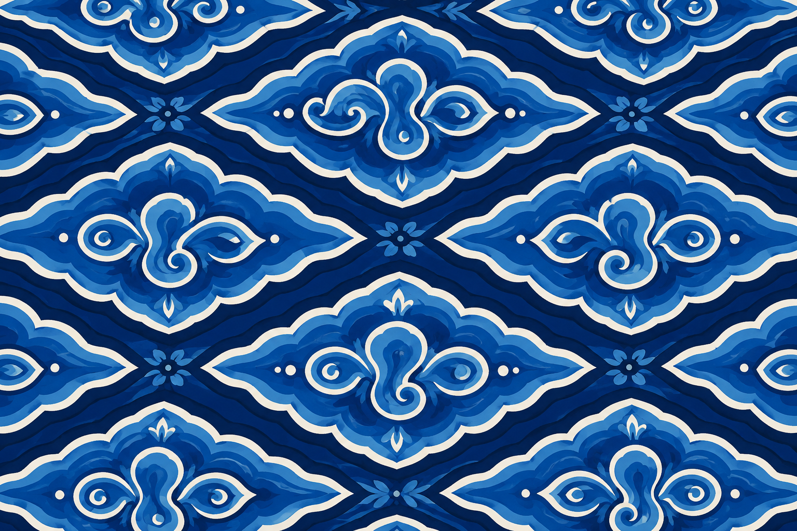
Mega Mendung
Cirebon
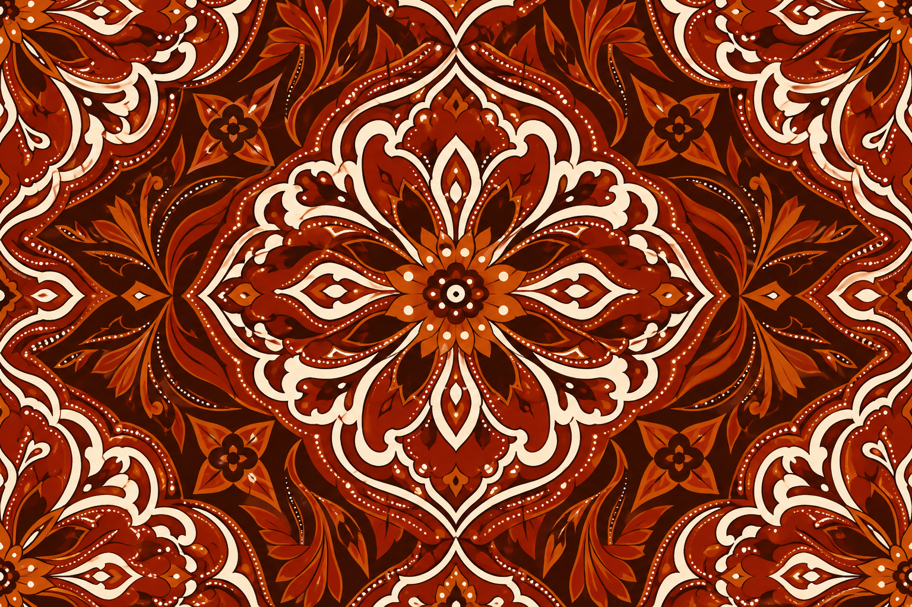
Ceplok
Jawa Tengah
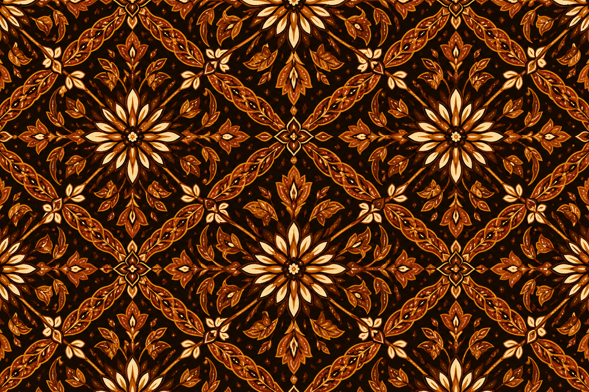
Truntum
Yogyakarta
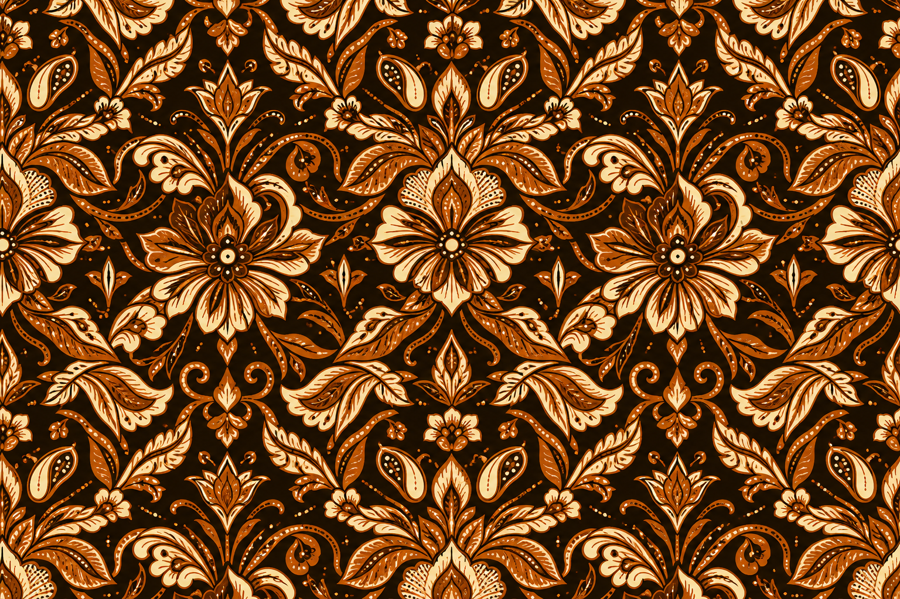
Sido Mukti
Solo
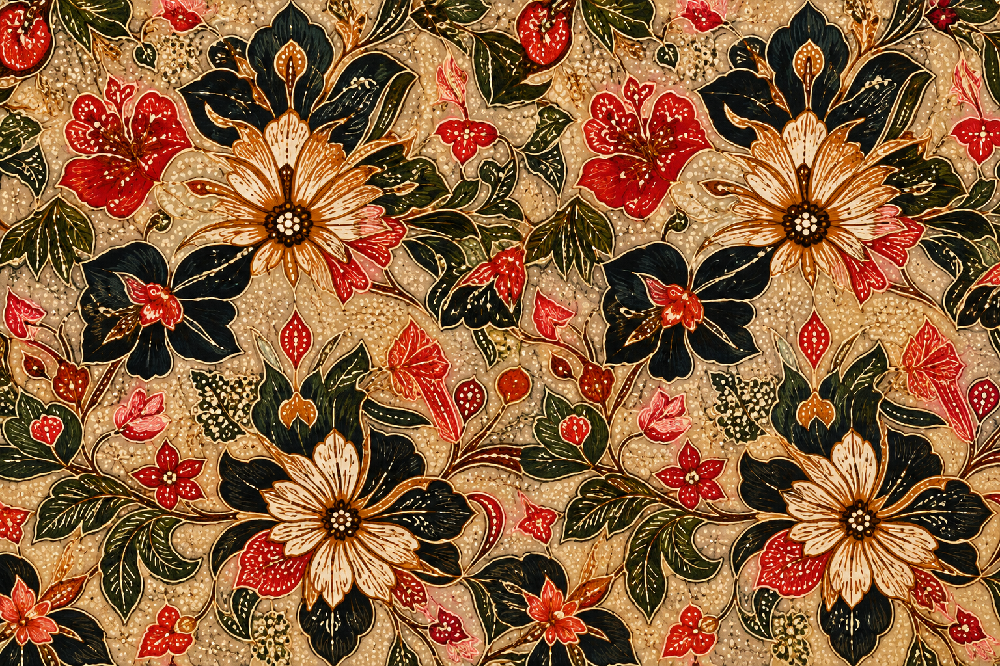
Tujuh Rupa
Pekalongan
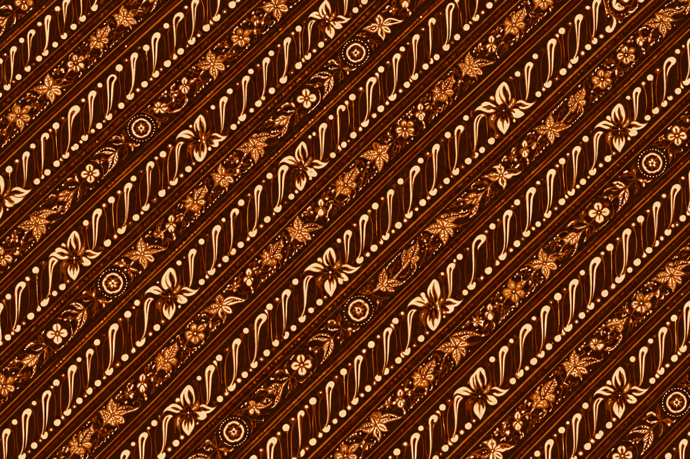
Udan Liris
Jawa Tengah
Rancang Motif Baru dari Perpaduan Motif
Pilih dua motif batik sebagai sumber inspirasi, atur gaya dan warna, lalu lihat hasil pratinjau motif baru secara instan.
1. Pilih Motif Sumber
Kawung
Yogyakarta
Parang
Jawa Tengah
2. Atur Gaya Perpaduan
Palet Warna
Jenis Pola
3. Hasil Motif Baru
Selesai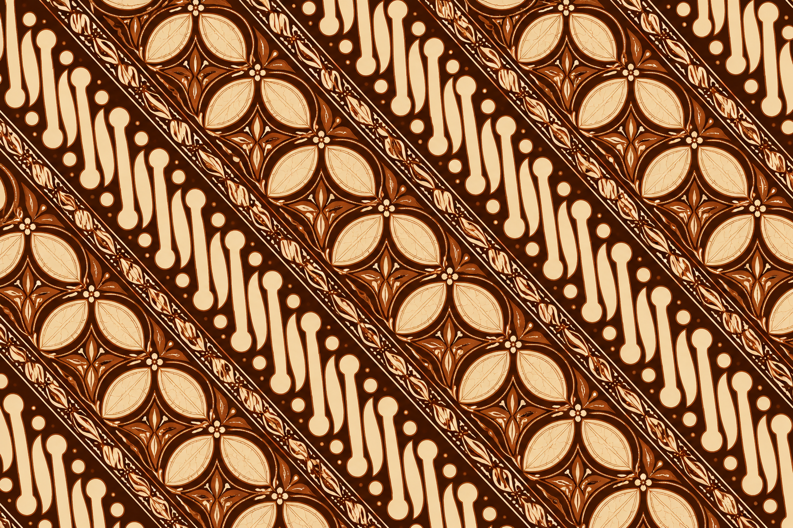
Kawung Parang Modern
Kombinasi Pola Diagonal & Warna Terracotta
Hasil Rancangan Motif
Berikut adalah hasil perpaduan motif berdasarkan pilihan Anda.
Desain ini dapat dijadikan referensi untuk pengembangan lebih lanjut.
Motif Hasil Perpaduan
Informasi Desain
Deskripsi
Perpaduan antara karakter geometris Kawung dengan pola diagonal Parang menghasilkan motif baru yang mempertahankan identitas tradisional namun memberikan kesan modern dan dinamis.
Variasi Lain
Kawung
Yogyakarta
Motif Kawung dikenal sebagai salah satu motif batik klasik yang memiliki makna mendalam tentang kesucian, keseimbangan, dan harapan akan kehidupan yang baik.
Filosofi Motif Kawung
Motif Kawung berasal dari bentuk buah kawung (buah aren) yang memiliki bentuk bulat dan simetris. Secara filosofi, motif ini melambangkan kesucian, keseimbangan, dan pengendalian diri. Dalam budaya Jawa, Kawung juga dikaitkan dengan harapan untuk mencapai kehidupan yang harmonis serta ilmu pengetahuan yang bermanfaat bagi sesama.
Empat bulatan lonjong yang mengelilingi titik pusat melambangkan empat arah mata angin yang bersumber pada satu titik kekuatan (pusat), yang bermakna bahwa manusia harus selalu ingat akan asal usulnya dan Sang Pencipta.
Makna Utama
-
Kesucian dan hati yang bersih
-
Keseimbangan hidup
-
Pengendalian diri
-
Harapan masa depan yang baik
Pelestari Warisan
Sosok di Balik Mahakarya
Kenali lebih dekat para seniman dan pengrajin lokal yang mendedikasikan hidupnya untuk menjaga keaslian, filosofi, dan keindahan seni Batik Nusantara.
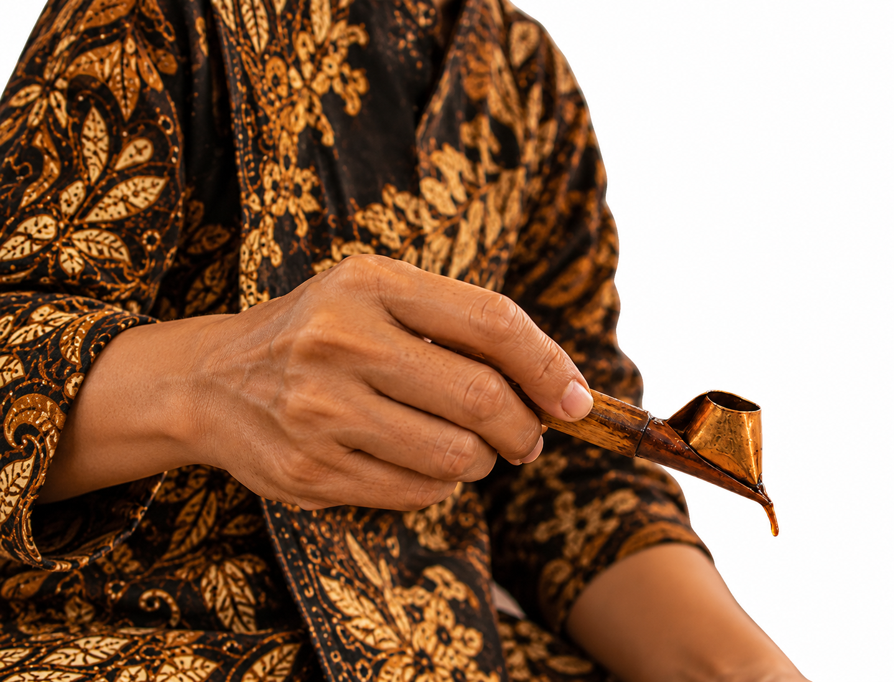
Giriloyo, Yogyakarta
Paguyuban Berkah Lestari
Komunitas pengrajin yang berfokus pada pelestarian motif klasik keraton. Mereka mempertahankan teknik pewarnaan alami menggunakan ekstrak kulit kayu mahoni dan daun nila.
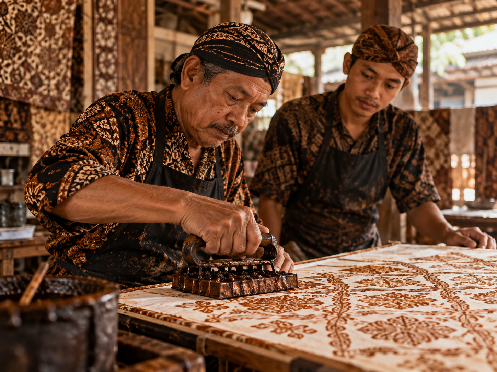
Laweyan, Surakarta
Keluarga Bapak Sudirjo
Generasi ketiga dari keluarga pembatik Laweyan yang ahli memadukan cap tembaga berusia puluhan tahun dengan gaya kontemporer yang elegan.
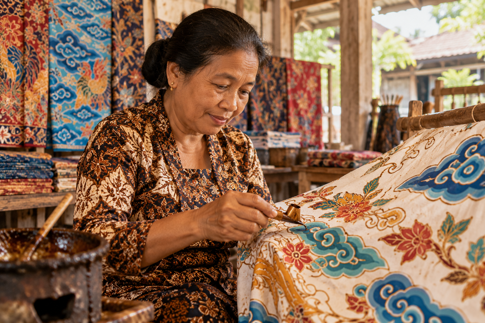
Trusmi, Cirebon
Sanggar Megamendung
Spesialis motif pesisiran yang cerah. Sanggar ini memberdayakan lebih dari 30 ibu rumah tangga di desa Trusmi untuk mandiri secara ekonomi melalui goresan canting.
Menjembatani Warisan Budaya dan Inovasi Digital
Kami hadir untuk memastikan bahwa keindahan dan nilai filosofis Batik Nusantara tidak hanya dilestarikan, tetapi juga terus berkembang seiring kemajuan teknologi.
Lebih dari Sekadar Galeri Digital
BatikiN menggabungkan Kecerdasan Buatan (AI) dengan basis data budaya untuk memudarkan sekat antara tradisi dan teknologi modern. Kami menghadirkan ruang interaktif dari identifikasi motif hingga eksplorasi desain baru.
500+
Motif Terkatalog
92%
Akurasi AI
Inovasi Teknologi
Identifikasi CNN & pembuatan motif baru berbasis AI.
Pelestarian Budaya
Dokumentasi filosofi & sejarah motif agar tak lekang zaman.
Pemberdayaan Pengrajin
Mendukung UMKM lokal terhubung ke pasar digital.